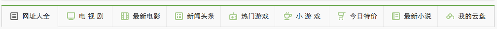

1.为什么需要clearfix
2.通栏的设计准则 (例：天猫、美丽说)
3.图片的高度获取
请使用js获取下面图片的显示高度

4.pinsterest 瀑布流的布局规则
5.鼠标划过图片，产生一个黑色且透明度为50%的遮罩层

所需的图片：：image/html5/640.png
code here...
6.参考下图
思考如何布局，并实现该效果
图片：image/html5/jackchen.jpg
图标：image/html5/manjian.png image/html5/mianyuyue.png
图标：image/html5/manjian.png image/html5/mianyuyue.png
7.实现下图效果，不需要显示小图标
